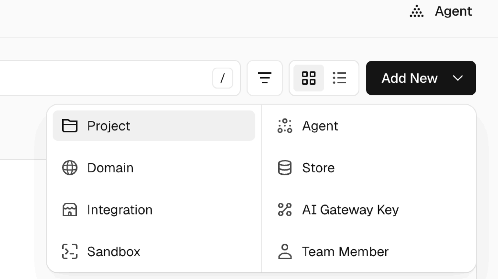
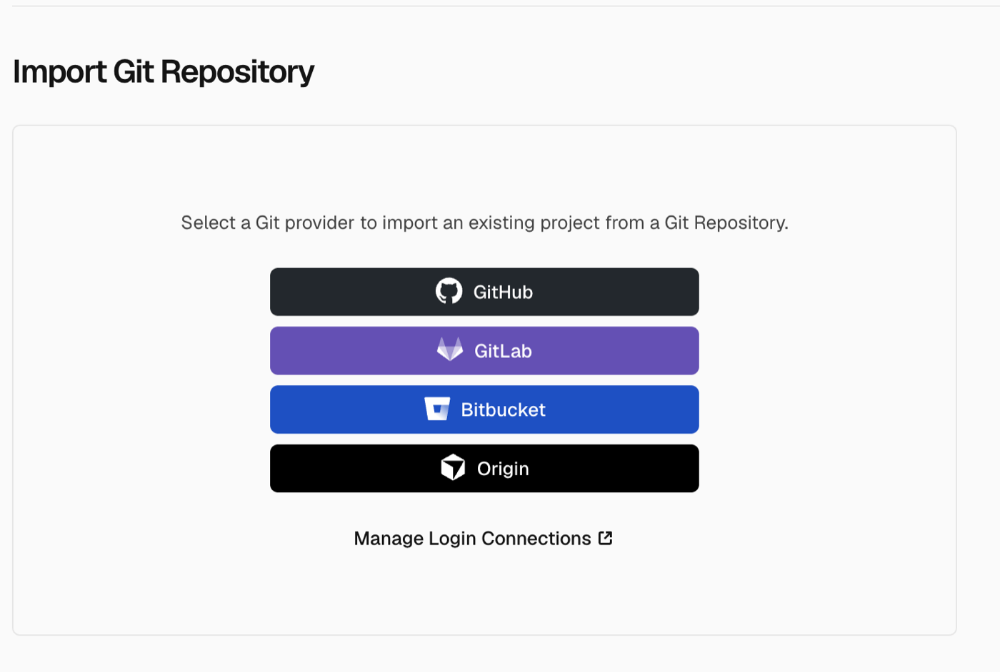
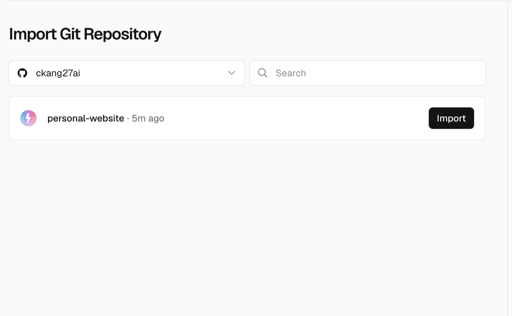
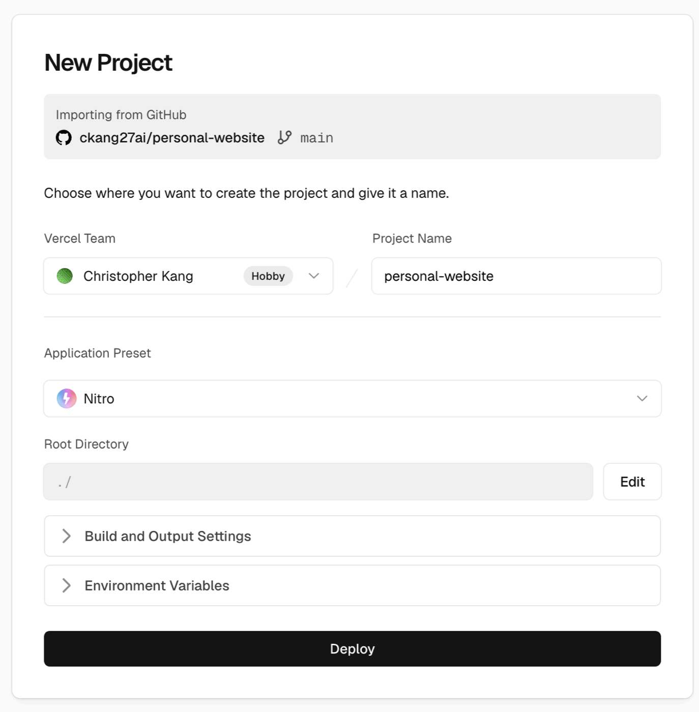
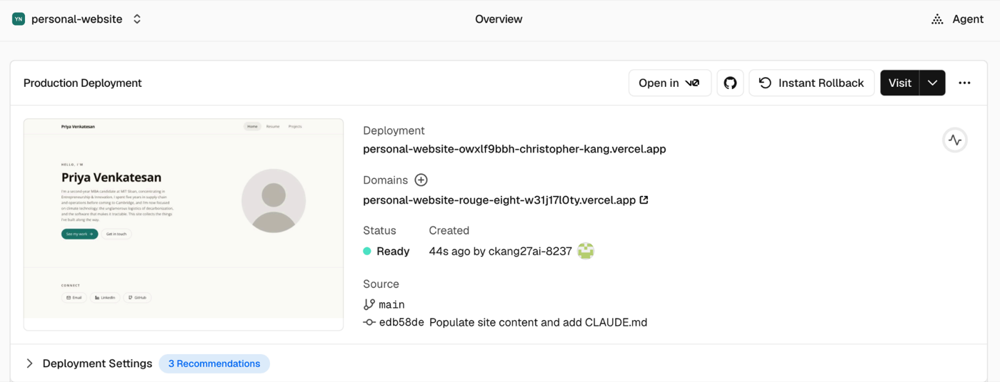
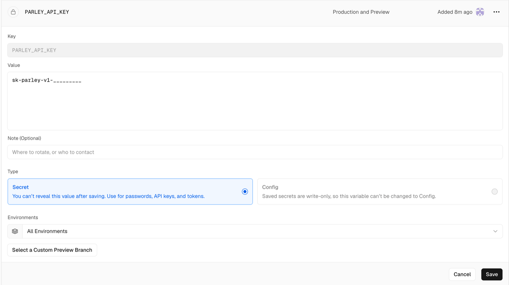
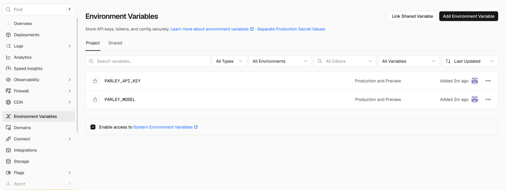
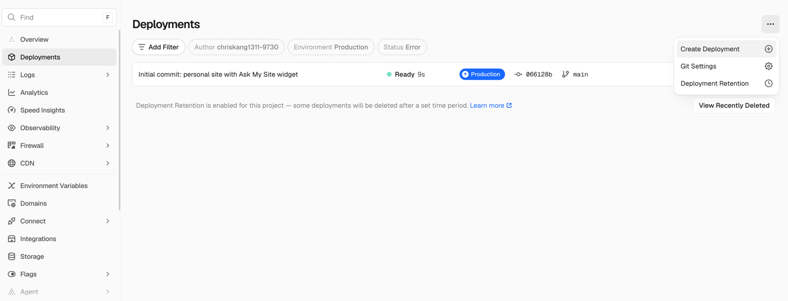
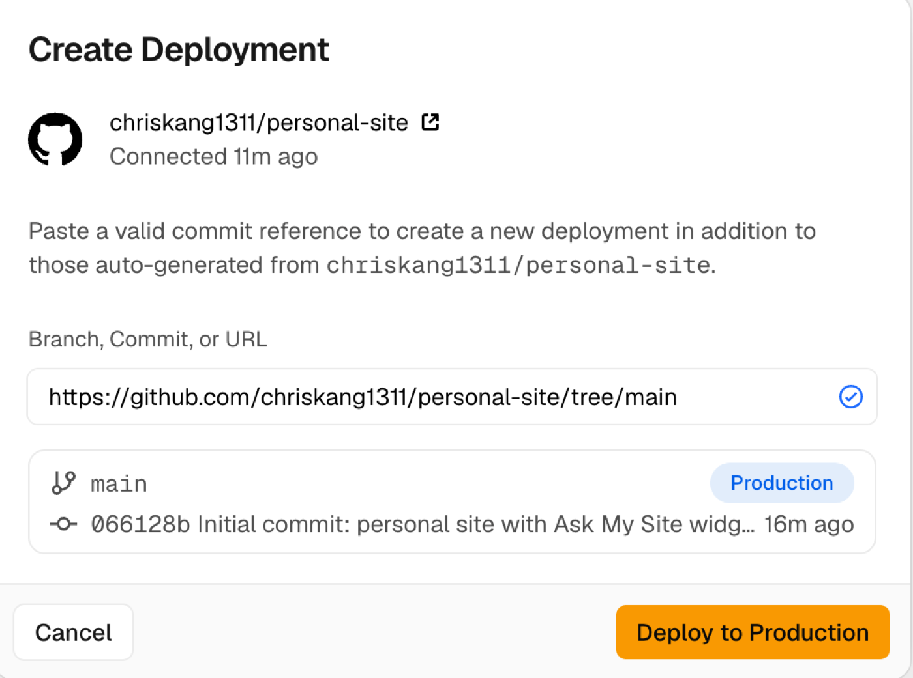

Part four · in your browser · Step 7 of 13
Sign up
for Vercel
Vercel takes the code from your repository and serves it as a real website. Your site needs it for a second reason too: the chat only works on a server, never from a file on your laptop.
Go to vercel.com and sign up with your email address. Vercel then asks you two questions.
| Which best describes you? | Choose I'm working on personal projects. |
|---|---|
| Team name | Your own name is fine. |
The personal plan is free and does everything this guide needs. The commercial plan asks for payment. If you are asked for card details, go back and check which option you chose.
Confirm both before continuing
Part four · in your browser · Step 8 of 13
Import your
repository
Four screens, in order. Nothing here needs to be typed.



personal-website — yours will say personal-site.
This screen offers one, and you could fill it in here. Don't — you are going to see what happens without it first. You will add your key in step 11.
Your project already contains a vercel.json file telling Vercel how to build it and which folders to keep hidden, so there is nothing for you to configure.
Confirm both before continuing
Part four · in your browser · Step 9 of 13
Open your
live site
When the build finishes you land on your project's overview, with a preview of your site and two web addresses.

The Deployment address changes every single time you deploy, so it is useless for sharing. The Domains address stays the same forever. That is the one to use.
It is public and you can send it to anyone — it is the address you would put on a résumé or in an email. Your repository stays private; only the finished site is visible.
Confirm both before continuing
Part four · in your browser · Step 10 of 13
Try the chat, and
expect it to fail
Look through your site, then open the chat and ask it something. It will not answer. That is the correct result at this point, and it is worth understanding why.
The same chat answered you on your laptop, before you started this guide. Nothing about your code has changed since. What changed is where it is running.
Your API key was never uploaded to GitHub. Your .gitignore kept .env.local out on purpose — it is the same file you confirmed was missing from the upload in step 6. On your laptop the site reads your key straight out of that file. Vercel built your site from GitHub, so it has every one of your files except that one, and without the key it cannot reach Parley.
Keys never belong in a repository, whether it is private or public. You give them to the host instead, which is exactly what you are about to do.
Confirm both before continuing
Part four · in your browser · Step 11 of 13
Give Vercel
your key
In your project on Vercel, open Settings and choose Environment Variables from the left-hand menu. Add these two, taking the values from your own .env.local file.
| PARLEY_API_KEY | Your Parley key, copied from .env.local. |
|---|---|
| PARLEY_MODEL | The same value as in .env.local — claude-sonnet-4-6 unless you changed it. |

Type the names exactly as shown, in capitals, with no spaces. A misspelled name is the most common reason this step does not take.

Vercel's own settings page is the right place for your key — it is stored encrypted and never sent to the browser. Do not paste it into a chat with Claude, into your code, or into any other site.
Confirm both before continuing
Part four · in your browser · Step 12 of 13
Redeploy
Adding variables does not change the site that is already running. You have to build it again.


main branch — leave it alone and click Deploy to Production.Confirm before continuing
Part four · in your browser · Step 13 of 13
Try the
chat again
Open your site and ask the chat a question about you.
- The chat answers, and names the files it drew on.
- The answer matches what you wrote in your own
knowledge/folder. - Your repository on GitHub still says Private.
If part four went wrong
- Vercel does not list my repository
- It has not been given access to that one. In the Import Git Repository section, use Adjust GitHub App Permissions and grant it
personal-site. Private repositories have to be granted one by one. - The build failed
- Open the deployment, copy the log, and paste it into Claude Code asking what it means. Build logs are long and specific — Claude will read it faster than you can.
- The chat still does not answer
- Three things, in order: the names are spelled exactly
PARLEY_API_KEYandPARLEY_MODEL; the redeploy in step 12 actually finished; and the key itself is right. You cannot read a saved value back — Vercel hides it deliberately — so if you suspect a typo, delete that variable, add it again, and redeploy. - The chat answers, but talks about someone else
- Your
knowledge/folder still holds the sample profile. Replace it with your own, then ask Claude Code to upload the change. - I am asked for card details
- Stop. You are on the commercial plan. You do not need to pay for anything in this guide — check the plan you picked in step 7.
Confirm all three to finish